Receiver templates¶
Experimental. exo-v2v 0.6.0 is an early release, validated in one lab (ESXi 7.0 U3 to Exoscale ch-gva-2). Try it on non-critical VMs first; commands and behaviour may change.
A receiver template is an Exoscale template that boots straight into the
exo-v2v receiver: a Linux system that runs entirely from RAM, so the
migration can overwrite the instance's own disk. With a receiver template,
exo-v2v create takes about one minute instead of 5 to 15, and the target
instance needs no access to package mirrors.
Without one, create starts the target instance from a stock Linux template,
installs the conversion tools on it and switches it into RAM (kexec). Both
ways produce the same receiver; the rest of the migration is identical.

Availability¶
Exoscale does not publish receiver templates yet: build and register your own (below). Exoscale-published Windows variants would carry the Windows licence, so a migrated Windows guest would run on a Windows-licensed instance. Until then, contact Exoscale about licensing before migrating Windows guests.
Templates built before exo-v2v 0.4.0 cannot serve a rehearsal: a copy has no public IP, and Exoscale then delivers the instance's metadata (the migration's SSH key) on a small read-only NoCloud drive instead of the metadata server; 0.4.0 templates read either. Rebuild them to rehearse.
Templates built before exo-v2v 0.2.0 lack dmsetup, which 0.2.0 uses to
rebuild LVM logical volumes. Such a receiver installs it when it needs it, which
requires access to a package mirror: rebuild your templates to avoid that.
Variants¶
The template's boot mode must match the VM's firmware. One image boots in both modes, with or without Secure Boot (Canonical-signed shim, GRUB and kernel), so Secure Boot is chosen per instance, not per template.
| Template | Boot mode | For |
|---|---|---|
exo-v2v-linux-uefi |
UEFI | Linux VMs with UEFI firmware |
exo-v2v-linux-legacy |
legacy | Linux VMs with BIOS firmware |
exo-v2v-windows-uefi |
UEFI | Windows VMs with UEFI firmware |
exo-v2v-windows-legacy |
legacy | Windows VMs with BIOS firmware |
The Windows variants also carry the virtio-win drivers and rhsrvany that virt-v2v needs to convert Windows guests. A Windows VM with BIOS firmware keeps BIOS on Exoscale: no conversion to UEFI is needed.
Use¶
exo-v2v plan web01 --vm web01 --zone ch-gva-2 \
--receiver-template exo-v2v-linux-uefi [--receiver-template-visibility private]
exo-v2v create web01
plan refuses a template whose boot mode does not match the VM. The receiver
logs in as v2v; exo-v2v handles that.
Build and register¶
template/receiver.pkr.hcl
builds the image and registers both boot-mode variants with Exoscale's
Packer plugin. Run it on
Ubuntu 24.04, as a user with passwordless sudo, with an Exoscale API key that
can register templates and write to an existing Object Storage bucket:
sudo apt-get install -y mmdebstrap qemu-utils gdisk dosfstools grub-pc-bin grub-efi-amd64-signed shim-signed
export EXOSCALE_API_KEY=EXO… EXOSCALE_API_SECRET=…
packer init template/
packer build -var flavour=linux -var image_bucket=BUCKET template/ # exo-v2v-linux-uefi, -legacy
packer build -var flavour=windows -var image_bucket=BUCKET template/ # exo-v2v-windows-uefi, -legacy
| Variable | Default | Meaning |
|---|---|---|
flavour |
linux |
linux, or windows (adds virtio-win and rhsrvany) |
image_bucket |
Existing bucket in the first zone; the image is removed after import | |
zones |
["ch-gva-2"] |
Zones to register the templates in (templates are per zone) |
template_prefix |
exo-v2v |
Template names: <prefix>-<flavour>-uefi and -legacy |
The recipe runs template/build-image.sh, which you can also run by hand and
register yourself:
sudo template/build-image.sh linux exo-v2v-linux.qcow2 # ~230 MB; windows: ~600 MB
exo storage upload exo-v2v-linux.qcow2 sos://BUCKET/
URL=$(exo storage presign sos://BUCKET/exo-v2v-linux.qcow2 -e 1h)
for m in uefi legacy; do
exo compute instance-template register exo-v2v-linux-$m "$URL" "$(md5sum < exo-v2v-linux.qcow2 | cut -d' ' -f1)" \
--zone ch-gva-2 --boot-mode $m --username v2v --disable-password
done
How it works¶
- The image is a 10 GB disk with a BIOS boot partition and an EFI system partition. GRUB loads the kernel and a ~220 MB initramfs that holds the whole receiver system (virt-v2v, libguestfs, QEMU, filesystem tools). The disk is never mounted.
- At boot the receiver reads the migration's SSH key from the instance user-data, generates its own SSH host keys and starts SSH. The Windows variant first copies virtio-win from the EFI partition into RAM.
createwaits for SSH before attaching the Block Storage volumes, then streams the exo-v2v agent over SSH and starts it.